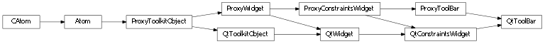
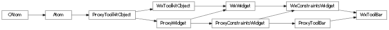

Bases: enaml.widgets.constraints_widget.ConstraintsWidget
A widget which displays a row of tool buttons.
A ToolBar is typically used as a child of a MainWindow where it can be dragged and docked in various locations in the same fashion as a DockPane. However, a ToolBar can also be used as the child of a Container and layed out with constraints, though in this case it will lose its ability to be docked.
Whether or not the tool bar is movable by the user. This value only has meaning if the tool bar is the child of a MainWindow.
Whether or not the tool bar can be floated as a separate window. This value only has meaning if the tool bar is the child of a MainWindow.
A boolean indicating whether or not the tool bar is floating. This value only has meaning if the tool bar is the child of a MainWindow.
The dock area in the MainWindow where the tool bar is docked. This value only has meaning if the tool bar is the child of a MainWindow.
The areas in the MainWindow where the tool bar can be docked by the user. This value only has meaning if the tool bar is the child of a MainWindow.
The orientation of the toolbar. This only has meaning when the toolbar is not a child of a MainWindow and is used as part of a constraints based layout.
Whether or not to automatically adjust the ‘hug_width’ and ‘hug_height’ values based on the value of ‘orientation’.
A reference to the ProxyToolBar object.

Bases: enaml.qt.qt_constraints_widget.QtConstraintsWidget, enaml.widgets.tool_bar.ProxyToolBar
A Qt implementation of an Enaml ToolBar.
A reference to the widget created by the proxy.
Locate the QAction object which logically follows the child.
| Parameters: | child (QtToolkitObject) – The child object of interest. |
|---|---|
| Returns: | result (QAction or None) – The QAction which logically follows the position of the child in the list of children. None will be returned if a relevant QAction is not found. |

Bases: enaml.wx.wx_constraints_widget.WxConstraintsWidget, enaml.widgets.tool_bar.ProxyToolBar
A Wx implementation of an Enaml ToolBar.
A reference to the widget created by the proxy.
Locate the wxAction object which logically follows the child.
| Parameters: | child (WxToolkitObject) – The child object of interest. |
|---|---|
| Returns: | result (wxAction or None) – The wxAction which logically follows the position of the child in the list of children. None will be returned if a relevant wxAction is not found. |